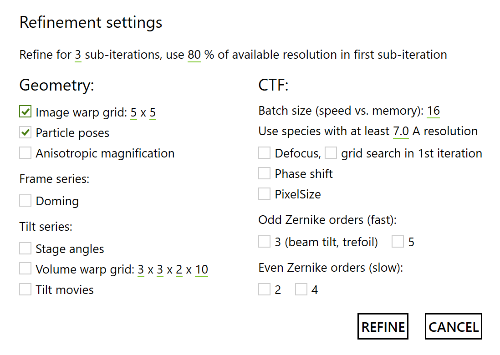

Quick Start: M
M is a stand-alone program shipped with Warp. While Warp handles the first stages of the data processing pipeline, M lives on its opposite end. It allows you to take refinement results from RELION and perform a multi-particle refinement. For frame series data, the procedure is similar to RELION's "particle polishing" and probably won't deliver significantly better results – unless you have a very heterogeneous dataset that can benefit from M's ability to consider as many classes as you want (memory limitations apply!), or maps with heterogeneous resolution that can benefit from M's map denoising. For tilt series data, M will likely deliver a noticeable resolution boost compared to patch tracking- or fiducials-based tilt alignments. Refinement of in situ data will also benefit significantly from the unlimited number of classes and transparent mechanisms for combining data from different sources.
The pipeline
Pre-processing of frame series
or tilt series in Warp
↓
Particle image
or sub-tomogram export from Warp
↓
Classification and refinement in RELION
↓
Import and refinement in M
↓
Final maps
(optionally: → re-export improved particles from Warp → re-classify and refine in RELION → import and improve alignments in M → repeat as needed)
Project structure
M strives to be a great tool for in situ data, which have been compared to "molecular sociology". Thus, its terminology takes a somewhat sociological angle. A project in M is referred to as a Population. A population contains at least one data source and at least one species. A Data source contains a set of frame series or tilt series and their metadata. A * Species* is a map that is refined, as well as particle metadata for the available data sources.
Creating a population
When M starts, you can choose between creating a new population and opening an existing one. To create a new population, give it a name and specify its root folder. There are no particular requirements for this location. It won't experience much IO during refinement, and the species folders contained there might grow to a few tens of gigabytes depending on map size. For populations with a single data source, we usually just go one level above the old Warp project folder.
Adding data sources
Once a population is open, you can click on the data source summary saying "0 data sources" to open the management dialog. Remote data sources are not supported at the moment. Click Add local and select a .settings file in a Warp project folder. Once M converts that file into a data source, its parameters and list of items become read-only. So if you want to change something (e.g. quality filter settings or binning value), load the folder in Warp and modify the settings. M will read in the metadata for all items and present you with the number of items that pass all quality criteria, as well as those filtered out or deselected manually. Give the data source a name, choose whether to include the sub-optimal items, and set the maximum number of frames or tilts (sorted by dose). The latter can be useful if the data have a very high overall dose that was used for picking or visual interpretation, but isn't required for high-resolution alignment – this will save computational resources during M's refinement. You can't change this setting later. Finally, click Create. The list of data sources should now contain the new source with its input settings.
Adding species
Make sure you've added all data sources you'd like to use, and click the big + to initiate the creation of a new species. Remote species aren't supported yet, but you can create a local one from scratch. Select From scratch and click add.
Give the species a Name and specify its Diameter along the longest axis. This value will determine the box size (2x diameter) and the spherical mask diameter for some operations. The Molecular weight currently isn't used anywhere, but you can specify a value anyway in case some smart heuristics become available in a future M version to take advantage of it. The Symmetry follows RELION's conventions. Select the correct group and a multiplier if applicable. The number of Temporal samples for poses determines how finely per-particle translation and rotation trajectories will be resolved as a function of dose. The optimal value depends on the particle mass (bigger = more signal = can fit more parameters) and the overall dose. Frame series data with a relatively low dose can benefit from 2–3 sampling points (2 still works for a 150 kDa protein), while 100+ e/Å2 tilt series can use 3–4 (especially when dealing with particles as large as ribosomes). If you intend to classify the particles further after an initial M refinement, you may want to set the number of temporal samples to 1 to definitely avoid biasing the classification through overfitting on a single reference.
For the Half-maps, it is best to select the final, unfiltered half-maps from RELION's 3D refinement. If you performed the refinement with binned data, please rescale the maps first to the pixel size you'd like to use in M, e.g. using the relion_image_handler utility. Once the first half-map is selected, M should figure out the Pixel size based on its header. If not, specify the value manually. The interactive isosurface renderings are there to help you make sure the selected half-maps are what you think they are.
The Mask can be loaded from a volume you made using the relion_mask_create utility, or prepared in M by low-pass filtering the average of the half-maps and selecting a binarization threshold. For refinements, M will expand and smooth the mask based on the current refinement resolution. Thus, the mask you provide should be binary (no smoothing) and as tight as what you would get in RELION before the expansion and smoothing steps. The pixel size and dimensions should be the same as those of the half-maps.
To use refined Particle positions and orientations from RELION, select a *_data.star file from the Refine3D job. M should be able to figure out the correct pixel sizes for both coordinates and shifts. Please correct the values manually if you think they are wrong. Deselect any data sources you don't want the particles to be linked to (e.g. in case of identical file names in multiple sources). If you have repeating file names across several data sources, please add the particles for one of them and use the particle set operations to add more later. M will report the number of particles that have been successfully linked to the data. If that number is 0 or lower than it should be, mismatching file names are the most likely culprit. Make sure the names in the rlnMicrographName column of the data.star file don't have any extra parts compared to the file names in the data source. For tilt series, rlnMicrographName should reference the .tomostar files.
Once everything is specified correctly, click Finish. M will calculate some map statistics and train an initial denoising model, which might take 10–15 minutes depending on your hardware.
Setting up refinement
With all data sources and species set up, click the big Refine button to bring up the refinement dialog. Here you can select different groups of parameters to be optimized.

Refine for N sub-iterations: During each refinement iterations, M alternates between refining various sets of parameters. To accelerate convergence, this can be done for several sub-iterations, which will all use the same reference maps for the optimization. If you're refining only one set of parameters (e.g. particle orientations), you can set the value to 1. Otherwise, 2–3 makes sense.
Use N % of available resolution in first sub-iteration: M performs a gradient descent optimization, which can easily get stuck in local optima. To avoid this, the resolution can be decreased in the beginning and gradually increased until the final sub-iteration. This can be especially useful for the first refinement iteration on a new data source. Also, when changing the image or volume warp grid resolution, you should start with lower refinement resolution (see section below). If only 1 sub-iteration is to be performed, it starts with 100 % of the available resolution.
Geometry
Image warp: This models the non-linear 2D deformation in each frame or tilt image due to beam-induced motion and charging. The model is set in the image reference frame, so if you have rectangular 6000x4000 px K3 images, a 6x4 grid might be more favorable than 4x4. The temporal dimension of the model equals the number of frames or tilts. For frame series, a pyramid of models will be created where each subsequent model has 2x the spatial dimension of the previous one, and 0.25x the temporal dimension. So even if you start with a 1x1 model, the resulting pyramid will still model some slow spatial deformation. Tilt series don't get pyramids (although including volume warp or tilt movie refinement has a similar effect, see below). For both frame and tilt series, the optimal spatial resolution will depend on the number of particles per micrograph, as well as the signal available per particle.
Anisotropic magnification: Some microscopes can exhibit significant linear distortion. This option enables its refinement based only on geometry (i.e. not taking its effect on the CTF into account). At the end of the iteration, the CTF is also adjusted accordingly. Because anisotropic magnification can be partially fitted with astigmatism in the CTF, defocus refinement (which includes astigmatism) is recommended in the same iteration.
Doming (frame series only):
Stage angles (tilt series only): Due to mechanical imprecisions in the stage's movement and lack of rigidity in lamella-like samples, the sample orientation can deviate significantly from their assumed values. While the biggest effect is in the projected particle positions, which are implicitly taken care of by the image warp model (at least 2x2 spatial resolution is required there), large particles can benefit from additional refinement of the sample/stage orientations. The temporal resolution of this model is per-tilt.
Volume warp (tilt series only): Tilt series are often used for thick samples where multiple particles can overlap along the projection axis. If the sample experiences shearing perpendicular to the projection axis, layers of particles can be displaced in a way that can't be modeled by mere 2D deformation of the images. Instead, a warping model in the reference frame of the tomographic volume is needed to influence particle positions in 3D. The resulting model has 4 dimensions: 3 spatial and 1 temporal (as a function of dose). The motion can usually be modeled with sparser temporal resolution since all the fast per-tilt movement is already taken care by the image warp model. Having a spatial Z dimension of at least 2 is necessary to model shearing. As with image warp, the optimal resolution depends on the available overall signal. However, it doesn't need to be as fine as image warp. Something like 2x2x2x10 might suffice. If your images are rectangular and you want the model to reflect that, remember that this is the tomogram reference frame where the tilt axis is aligned with the Y axis. It means that 6000x4000 px images with a tilt axis angle close to 90° or 270° will need e.g. a 2x3 model.
Tilt movies (tilt series only): If you used Warp in all of the pre-processing steps, M can go back all the way to the original tilt movies and optimize their frame alignment using the same high-resolution references. This procedure usually takes a significant amount of time. Once the refinement of a tilt movie is finished, an average tilt image will be saved in the average subfolder of the old Warp project directory, overwriting Warp's previous result. Please note that M currently doesn't back up the previous version. If something goes wrong and you'd like to go back, please either back up the old images and movie metadata manually, or re-process the tilt movies with Warp.
Particle positions/angles: This is the conventional particle pose optimization, except you're also fitting rotation and translation tracks if you set the species' temporal resolution to be higher than 1.
CTF
Batch size: M pre-multiplies the particles by their CTF before cropping them to a smaller box for refinement. This has no speed disadvantages for geometry refinement. However, since the CTF must change during CTF refinement, the particles must be constantly re-extracted, pre-multiplied and cropped – which is computationally expensive. This is done in mini-batches to keep the memory footprint small. Decrease the batch size if you run out of GPU memory. Increase it if you have plenty of GPU memory to gain a bit of speed, but probably not more than half of the average per-series particle count.
Use species with at least N Å resolution: Reference-based CTF refinement requires relatively high resolution to be successful. If you have multiple species with different resolution, this parameter determines which of them will be considered during CTF refinement. For tilt series, the minimum resolution can be a bit lower, e.g. 7 A, whereas frame series with small particles require higher resolution, e.g. 4 A.
Defocus: For frame series, defocus refinement establishes per-particle defocus values, and per-series astigmatism with a spatial resolution of 3x3. For tilt series, defocus refinement finds per-tilt defocus and astigmatism values.
Grid search in 1st iteration: Gradient descent optimization will fail when the defocus is too far off because of the oscillating nature of the CTF. Instead, a broader, exhaustive search can be performed in the first sub-iteration.
Phase shift: If you acquired the data with a Volta phase plate, the phase shift of the CTF will likely be different in each micrograph. Enable this to optimize a single phase shift value for each frame series, or a per-tilt phase shift model for each tilt series.
Pixel size: The effect of the pixel size on the CTF is correlated with that of Cs and acceleration voltage. Thus, given that we don't have very accurate absolute values for either of those, we can't arrive at the correct absolute pixel size by refining the CTF model against the data. However, to make the CTF fit better, it is enough to adjust either of the variables relatively to its assumed value. M can refine per-series Cs as a substitute for the pixel size. Because the CTF model changes during this refinement, it is quite slow.
Odd Zernike orders: Zernike polynomials of odd orders describe anti-symmetric aberrations. They don't affect the CTF and can thus be refined quickly together with the geometry. 3rd-order polynomials model beam tilt and trefoil. Probably doesn't make sense at resolutions worse than 4 A, unless the microscope is very poorly aligned.
Even Zernike orders: Zernike polynomials of even orders affect the CTF and are thus quite slow to refine in M. The refinement is done per-series, so you need a high particle density to get enough signal. This will be handled in a smarter way in the future.
CTF refinement: Once your species reach a high enough resolution, you can refine parameters of the contrast transfer function. A resolution of at least 6–7 A is recommended for this. Since not all species may reach the same high resolution, you can specify a threshold to Use species with at least x A resolution.
Defocus and astigmatism: For frame series, this will refine the defocus values per-particle, as well as one common set of astigmatism parameters. In tilt series, the relative Z offsets between particles are known with a higher precision than could be obtained through defocus refinement. However, defocus and astigmatism can change in each tilt. M optimizes a global defocus offset and astigmatism per-tilt in that case.
Changing model resolution between refinement iterations
M performs a gradient descent-like optimization to cope with the multitude of parameters in a multi-particle refinement. This means that it is much more likely to get stuck in a local optimum if the global optimum is too far away. Starting refinement using RELION's globally refined poses and at relatively low resolution helps with that. However, if you decide to change the resolution of the image or volume warp models, resampling the model can put some parameters too far away from their optima for the latter to be reached. You should at least set the refinement resolution to be lower in the first sub-iteration, e.g. 70 %. It can also be helpful to ignore the results obtained with the previous models and just restart refinement from the very first iteration. To do so, overwrite the frame or tilt series metadata (located in the same folder as the raw data) as well as the species files with their first versions. The latter can be found in the versions subfolder of the respective data source and species directories. You can also do this with any other previous version if you want. Sorry for the inconvenience – M's UI will offer a better mechanism in the future.
Memory considerations
Because M needs to hold all particle images in memory at the same time when refining a frame or tilt series, the memory footprint can become quite large if you have a lot of particles per item and/or high resolution. To address this, M stores these images in " pinned" CPU memory, which the GPU can directly access. Unfortunately, the actual available amount of pinned memory is usually far lower than the overall memory capacity, and the exact amount is still a bit of a mystery to us. For instance, on a system with 128 GB RAM, ca. 20 GB can be used as pinned memory by M in our experience. On multi-GPU systems, M will schedule the processing of individual items such that the simultaneous pressure on pinned memory does not exceed an empirically determined limit. This can lead to some GPUs staying idle temporarily while there is not enough memory. If a single item requires more memory than the limit, M will try to process it anyway and may crash. If there are only a few of such densely populated items and they are not critical to the overall project, you can try removing them from the data source's .source file.
Meanwhile, GPU memory is used to store reference volumes for all species, the raw frame or tilt data, as well as buffers and FFT plans for fast pre-processing of small batches of particle images. Reconstruction volumes are loaded into GPU memory one species at a time at the end of an item's refinement, and transferred back to (unpinned) CPU memory once back-projection is finished. Unless you have lots of high-resolution species, cards with 12 GB of memory should be fine.
We are working on making use of free GPU memory as a substitute for some of the pinned CPU memory. However, multi-particle refinements will likely remain resource-intensive in the near future.
Making sense of the results
All refined species maps are contained in the species/[species ID] subfolders inside the population directory. The species IDs are very cryptic to make them unique regardless of the names, but the maps include the species name you provided. The most useful maps are likely the two half1 and half2 half-maps, the filtered and sharpened filtsharp map (equivalent to the output from RELION's post-processing), the denoised map, as well as the local resolution values contained in the localres volume. The current global resolution and B-factor used for sharpening are contained in the .species XML file.
If the resolution of your map has far surpassed that of the map you used to prepare the initial mask and you think the latter looks too blobby, you can use e.g. M's denoised map to prepare a new mask using relion_mask_create, and sneak that updated mask into the next refinement iteration by replacing the [species name]_mask.mrc file with it. Please make sure it has the same pixel size as the rest of that species' maps.